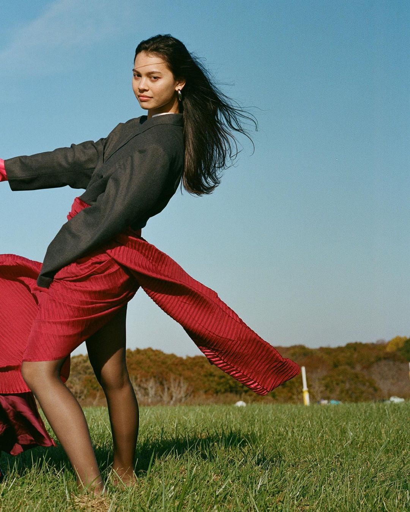

Ad,
Maison at Yale is a fashion photography group I joined during my first year winter. After getting settled with photography with my Yale College Arts archivist job, I was incredibly excited to join a group of people brought together for their love of fashion and art. However, I shortly noticed that this was not an artistic utopia and all aesthetics were not valued the same.

Art?
Photos should be clean yet avant-garde, experimental but not raw, relatable while not being something you can find on someone’s Instagram feed. Unspoken rules become more explicit and apparent in my mind, and I felt that I was stifling my own joy of photography by committing so much time to a group I used to carry so much excitement for.